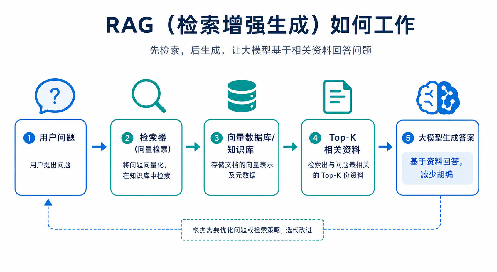
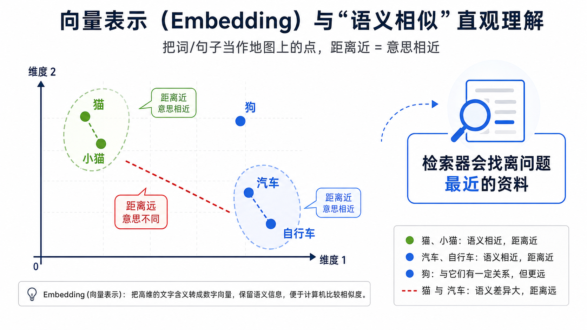

为什么重要
大模型很像“口才很好、见多识广的同学”，但它有两个常见问题：记不住你公司/课堂/书里的最新资料，以及 遇到不确定时可能会编得很像真的（这就是大家常说的“胡编”）。
RAG 的核心思想是：不要让模型闭眼作答，而是让它在回答前先去你的资料库里“找证据”，再基于证据组织答案。
一句话记住：RAG = 检索（找资料） + 生成（写答案）。
直观类比
想象你在做一道历史题：如果你先翻课本找到相关段落，再用自己的话总结，正确率通常更高；如果你不翻书凭感觉写， 很可能写得流畅但细节错。
RAG 就是把“先翻书”这一步做成系统：让模型自动去“课本”（知识库）里翻到最相关的几页，再回答。
工作原理（看图更清楚）


关键点在于：系统会把“问题”和“资料片段”都变成一串数字（向量），再用“距离”判断谁更像谁，从而找出最相关的资料片段（Top‑K），最后交给大模型写答案。
关键术语解释（不背术语也能懂）
- 知识库
- 你自己的资料集合：课件、文档、FAQ、制度、论文、笔记等。
- 切片
- 把长文档切成小段（例如每段 200～500 字）。就像把一本书拆成很多“便签纸”。
- Embedding（向量）
- 把一句话的“意思”变成一串数字。数字之间的距离可以表示“语义相似”。
- 向量数据库
- 专门用来做“按相似度快速找内容”的数据库，就像超快的“按意思检索”的图书馆检索系统。
- Top‑K
- 最相似的前 K 段资料（比如前 3 段、前 5 段）。
- 提示词（Prompt）
- 给大模型的说明：包含用户问题 + 找到的资料 + 回答要求（比如要引用资料）。
一个实际应用案例：公司制度问答机器人
假设你要做一个“公司制度问答”机器人：员工问“加班调休怎么申请？”如果只用大模型，它可能回答得很像真的，但和公司最新流程不一致。
- 把制度文档、流程说明、常见问题整理进知识库，并按段切片。
- 员工提问后，检索器从知识库里找出最相关的几段制度原文。
- 大模型基于这些原文，用更好理解的语言整理步骤，并提醒关键信息（例如审批人、截止时间）。
效果：答案更贴合“你自己的资料”，更新制度后只需更新知识库，不必重新训练大模型。
常见误区（很容易踩坑）
- 误区1：RAG = 绝对不会胡编。其实不一定。检索到的资料如果不相关、或资料本身有误，生成仍会出错。
- 误区2：把整本书不切片直接塞进去。资料太长会被截断，也会变慢；切片更利于精确检索。
- 误区3：只看“检索到没”，不看“是否用上了”。要让模型明确“只能依据资料回答”，否则它可能忽略资料。
- 误区4：资料越多越好。资料多但杂，会把“噪音”也检索出来；更重要的是资料质量与组织方式。
3个复习问题（自测一下）
- 用一句话解释：为什么 RAG 能减少大模型“胡编”？
- Embedding（向量）在 RAG 里主要负责做什么？
- 如果检索出来的 Top‑K 资料不相关，你会优先从哪三件事排查？